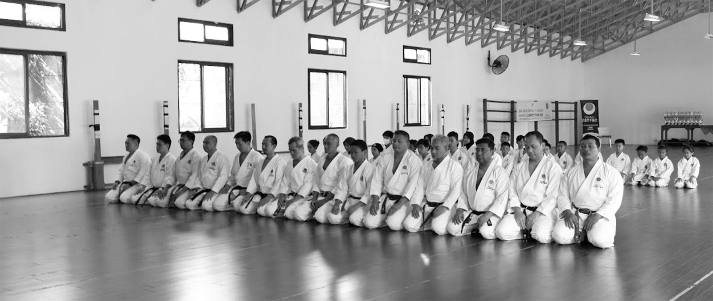

Discover official JKA Indonesia dojos across the nation, united by the same discipline, values, and authentic Shotokan standards.
GOR Bulungan
Jl. Bulungan No.1
Kota Jakarta Selatan
DKI Jakarta 12130, Indonesia
Suyana Sensei
ScheduleSaturday : 08:00-10:00
Tuesday : 09:00-11:00
Dinas Cipta Karya, Tata Ruang Dan Pertanahan DKI
Jl. Taman Jati Baru No.1 Cideng, Jakarta Pusat
Kris Darmanto Ebraheem
ScheduleFriday : 08:00 - 10:00
Sunday : 09:00 - 11:00
Jl. Mawar No.8 RT 14/RW 6, Pesanggrahan, Kota Jakarta Selatan, DKI Jakarta, 12320
RepresentativeHarnanto / Nori Ansari
ScheduleWednesday : 19:00-21:00
Thursday : 19:00-21:00
Sunday : 07:00-09:00
Green Bintaro Indah, Jl. Pesantren, Kel. Jurang Mangu Timur, Kec. Pondok Aren, Tangerang Selatan 15422, Banten, Indonesia
RepresentativeTaufik Hidayat
ScheduleSunday : 06:30-08:30
Bogor Selatan Police Station, Jl. Pahlawan 100, Bogor 16132, Jawa Barat, Indonesia
RepresentativeIrlandia Dwi Fesyara
ScheduleSunday : 08:00-10:00
Balai RW Rangkah I, Jl. Rangkah I No.72, RT.003/RW.07, Rangkah, Kec. Tambaksari, Surabaya, Jawa Timur 60135
RepresentativeTan Indra
ScheduleSunday : 08:00 - 12:00
Jl. Mayjen Bambang Sugeng No.52, Mertoyudan, Kabupaten Magelang
RepresentativeEko Karyanto
ScheduleThursday : 15:00 - 17:00
Saturday : 15:00 - 17:00
Dsn 5, RT.16/RW.5, Kel. Purwodadi, Kec. Trimurjo, Kabupaten Lampung Tengah, Lampung
RepresentativeRamli Saragih, SE
ScheduleSaturday : 16:00 - 17:30
JKA Indonesia's dojo network represents the heart of our community—where tradition is practiced, character is shaped, and excellence is forged through consistent training. Each official JKA dojo across Indonesia follows the standardized curriculum from JKA Headquarters in Japan, ensuring the same level of quality, discipline, and authenticity wherever you train.
From beginners taking their first stance to advanced karateka refining their mastery, every dojo is a place to grow, connect, and uphold the true spirit of Karate-Do.